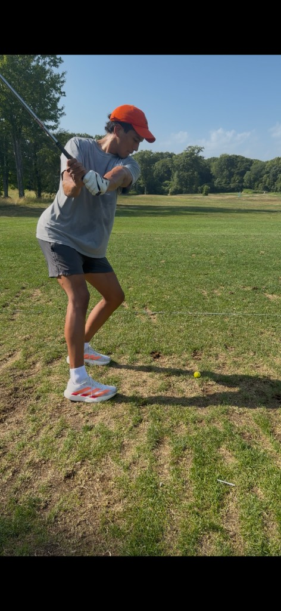
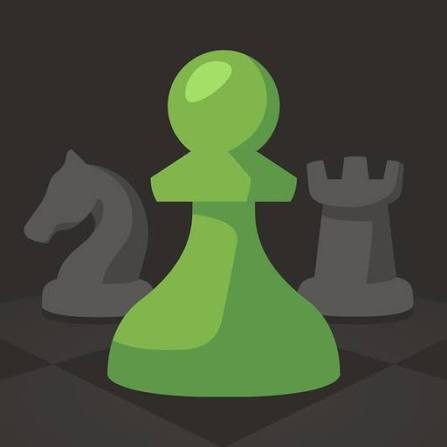
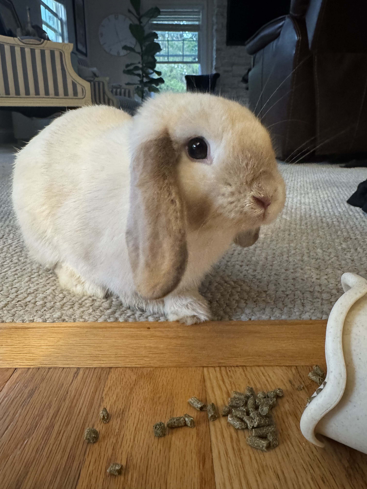

Resume · Skills
Impact
scroll to explore ↓
About Me
Hi, I'm Alex, a CS and Math student at Northeastern. More than anything, I want to leave things better than I found them. I enjoy chasing hard problems, and making meaningful impact through my work, whether it's through cancer research or helping buisness grow!
Impact.
Selected Projects · 01 / 03
Scrapes public tweets without the official API and runs them through a three-layer NLP sentiment ensemble: TextBlob, VADER, and a fine-tuned DistilBERT, to classify sentiment at scale.
Selected Projects · 02 / 03
Top 8% globally (912 / 13,000). Built strategies across market making, scalping, locational arbitrage, and mean-reversion to optimize risk-adjusted returns.
Selected Projects · 03 / 03
Full-stack crypto investment analytics app (CS 3200) — MySQL backend, middleware API, and Streamlit frontend supporting investor, developer, and regulatory roles. Live data tracking, portfolio management, and compliance reporting, all containerized with Docker Compose.
Resume · Education
Resume · Experience
Resume · Skills
Resume · Interests
Running
Training for my first marathon is no joke, but I love every single step of it. Running has been part of my life since joining my high school track team, and chasing that finish line is something I never want to let go of.

Golf
I picked up golf recently and I've really been loving it. It's one of those sports that really really humbles you every single time you step on the course, but that one perfect shot keeps pulling you right back out there.

Chess
Have been playing chess with friends and online for about 7 years. I really enjoy just messing around and the feeling of incompleteness of the game, that feeling that there's always another level to reach.

Luna 🐰
Get In Touch
Open to opportunities, research, and interesting problems.